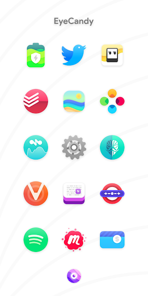

Nebula 图标包快问快答：8845+ 枚手绘图标的常见困惑一次理清
整理一篇关于 Nebula 图标包的快问快答，从适配条件、设计风格、套用方法到付费形态，覆盖新手最常碰到的问题。
整理一篇关于 Nebula 的快问快答。不管你是刚刷到它的截图好奇点进来，还是已经买了包但桌面迟迟没变化，下面这几组问答应该能把你卡住的那个环节打通。
Nebula 到底是什么？装完就能换桌面图标吗？
Nebula官网上介绍它是一款安卓图标包，提供 8845+ 枚手绘风格的应用图标素材，每周还在持续更新。但它不是一个独立的桌面启动器——装完后你只会看到一个管理面板，可以浏览图标、看壁纸、提交缺图标申请，桌面本身不会自动变。要让图标真正生效，必须搭配一个第三方启动器（比如 Nova、Niagara、Smart Launcher），由启动器把 Nebula 的素材替换到每个应用上。

谁适合用 Nebula？什么样的桌面能配得上它？
喜欢简约形状但又嫌单色线稿太冷清的人，会吃 Nebula 这一套。它的配色纲领是「简单形状 + 一点亮色」——图标普遍收敛在圆形或圆角方块里，主体图案只留最容易识别的两三笔，但颜色用得很激进：橙与青、粉与紫、红与绿常常直接相邻，高饱和拉满却不刺眼。官方特别提到这套配色在 AMOLED 屏幕上表现最佳，深色壁纸上层次分明。
桌面搭配上，Niagara 这种极简单列桌面能让 Nebula 的图标像一串彩色糖珠滚动；Nova 的网格布局则适合把同色系图标凑在一屏，撞色效果更集中。反过来，如果你的桌面图标已经密密麻麻、壁纸也花，换 Nebula 大概率也救不回来。
安装前要做哪些准备？设备有硬性门槛吗？
硬性门槛其实不高：Android 5.0 及以上，预留 300MB 左右存储空间（安装包从Nebula下载拿，本体约 107MB，解包和缓存还要余量），以及——这一条最容易漏——必须先装好第三方启动器。没装启动器就打开 Nebula，它只会告诉你「我是颜料，不是刷子」，桌面不会有任何变化。
权限方面倒是很干净：不需要定位、通讯录这类敏感权限，Blueprint 面板申请图标时才会读取已安装应用列表。装完可以去系统应用详情里核对一遍权限清单，与描述不符就别继续用。
付费形态是什么？一次买断还是订阅？值不值？
一次买断，第三方收录站标注的价格在 1 美元上下，不同地区和时间会有浮动。买断后能拿到 8845+ 枚图标和后续每周更新的永久使用权，还有每周 10 枚免费图标申请额度以及 20 张设计师独家壁纸。
值不值主要看你对「每周新图标」的需求强度。如果只是想把桌面换个心情，网盘转存的旧版本（比如 7.5.4）离线就能用全部核心功能，只是追新更新需要重新在商店购买。付费的真正回报是更新通道和申请额度，不追新的话旧版本够用。
已经装了 Niagara Launcher，怎么套 Nebula？入口在哪？
Nebula文档里整理了两种入口，当前版本走外观设置：桌面下滑打开 Niagara 设置 → 进入「外观 / Appearance」→ 点「图标包 / Icon pack」→ 在已安装列表里选中 Nebula 即可。返回桌面，列表里的应用图标会立刻换成 Nebula 的彩色圆形。
部分旧版本的入口藏在主题编辑里：Niagara 设置 → 主题（Themes）→ 编辑当前主题 → 点图标形状按钮 → 选择图标包。按上面四步没找到入口的话走这条旧路，或者直接在 Niagara 设置里搜索「图标」。
一个注意点：Niagara 不在 Nebula Blueprint 面板的直连名单里，从面板点套用对它无效，必须手动走上面的路径。
为什么 Nebula 的图标铺满一屏不显得乱？撞色不是应该很跳吗？
这正是 Nebula 设计上最聪明的地方。单看每一枚图标都很跳，但整屏铺开来却很统一，靠的是三条隐性规则：
- 统一的底形：绝大多数图标收敛在圆形基底里，形状先统一了视觉节奏；
- 有限的白与灰：中性色只用来处理留白和阴影，不参与撞色；
- 分组内呼应：应用内按 Google、Attractive、Colorful 等主题分组预览，同组图标的色相彼此呼应。
这三条规则叠加在一起，就形成了「撞而不乱」的观感——形状先稳住节奏，颜色只在有限范围内狂欢。
和同类图标包比，Nebula 的优势在哪？有没有缺点？
优势集中在三个点：一是图标量大且覆盖广，8845+ 枚是同价位里少见的；二是高饱和撞色 + 圆形基底的组合确实独树一帜，在 AMOLED 屏上的表现很难被替代；三是每周更新节奏稳定，申请渠道畅通，缺图标的应用补上的速度比很多大牌子都快。
缺点也有：风格偏激进，如果你偏爱单色线稿或拟物质感，大概率会觉得太吵；付费应用对价格敏感的同学是一道门槛，虽然 1 美元上下不算贵但毕竟不是零成本试错；还有一点，Niagara 等部分启动器不在直连名单里，每次换图标包都得手动进设置，有点麻烦。
套完图标包发现有些应用没变化，是 Nebula 漏做了吗？
大概率是 Nebula 没有为那个应用绘制专属图标，启动器就继续使用系统默认图标。这不是你操作有问题。Nebula 的 Blueprint 面板就是专门解决这个的——打开它可以看到「待申请」列表，里面是你手机里 Nebula 还没覆盖的应用，勾选后每周能免费申请 10 枚。
还有一种可能是启动器缓存没刷新，去启动器设置里清一下图标缓存或者重启桌面进程试试。但如果清完还是原样，那就老老实实去申请吧。
最后一句总评：如果你已经在用第三方启动器、喜欢圆形图标的规整感、又想给桌面加点不闹腾的彩色，Nebula 这 1 块钱花得值。
关于 Nebula 的这份资料我在 GitHub 的APK 仓库、Gitee 的镜像还有 GitCode 的备份各存了一份，国内访问任选其一就行。